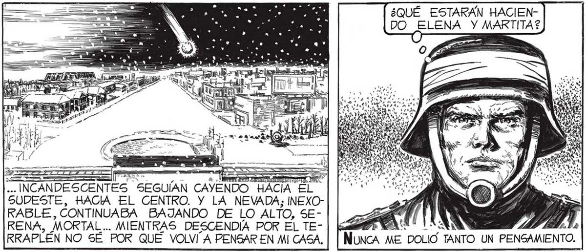
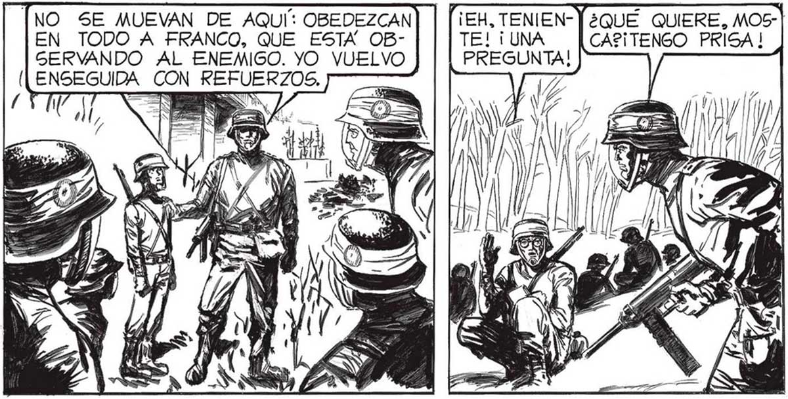
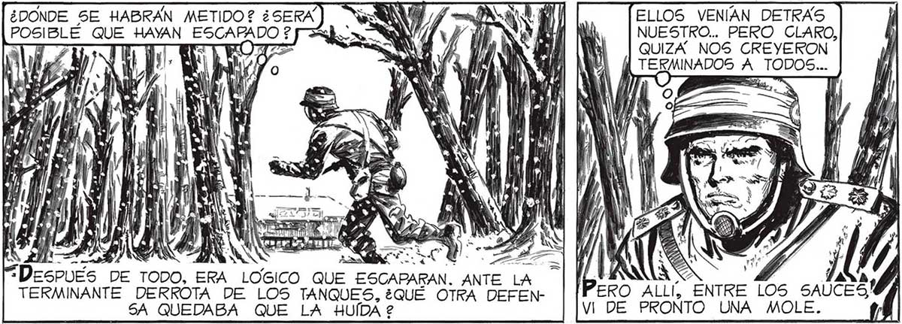

92 . E ara 9 ALLÍ ESTARÍAN, EN EL “CHALET? JUNTO A LA VENTANA, ESPERANDOME. LOS MINUTOS QUE PARA MÍ PARECÚAN VOLAR, SUMERGIDO COMO ESTABA EN EL PELIGRO Y EN LA ACCION, PARA ELLAS SERAN INACABABLES, MONSTRUOSAMENTE LENTOS. ¿CUANTOS MINUTOS CALCULA QUE PA SARON ENTRE LA EXPLOSIÓN DEL OTRO TANQUE Y LA DEL NUESTRO ? ESTOY ESCRIBIENDO EL RELATO DE LA ACCION, Y NECESITO EL DETALLE. QUÉDESE AQUÍ, VIGILANDO 5US MOVIMIENTOS, YO TRAERÉ AL CABO AMAYA Y 5US HOMBRES: CON UN ¡ATAQUE A FONDO DE MORTEROS Y "BAZOOKAS” PODEMOS BARRERLOS. MEE ESA sb O. WN ¡PABLO! ¿DONDE TE | HABIAS METIDO ? No SÉ QUÉ LE CONTESTE, TROTÉ HACIA NUEGTRA RETAGUARDIA, PROCURANDO NO ACERCARME PARA NADA A LA CALLE: LOS RESTOS DE LOS TANQUES Y EL TENDAL DE CUERPOS CARBONIZADOS CERTIFICABAN QUE NO ERA SALUDABLE HACERLO. APROBACIÓN DEL Me GusTO LA FUNDIDOR. POR PRIMERA VEZ YO DEMOSTRABA QUE POR ALGO ERA EL JEFE DE LOS MI LICIANOS. AUNQUE NO ME ENGANE: AUN ANIQUILAN” DO A AQUEL GRUPO DE INVA- |, : me TA SORES, ¿CUANTO INCANDESCENTES SEGUÍAN CAYENDO HACIA El FALTARÍA PARA |SUDESTE, HACIA EL CENTRO. Y LA NEVADA; INEXOEL TRIUNFO TO- |RABLE, CONTINUABA BAJANDO DE LO ALTO, SETAL? LOS BOLIDOS... |RENA, MORTAL... MIENTRAS DESCENDIÍA POR EL TENO a AQUÍ: OBEDEZCAN EN T FRANCO, QUE ESTA OBPORQUE, LA VER- SERVANDO AL ENEMIGO. YO VUELVO DAD, ME HABÍA ENSEGUIDA CON REFUERZOS. OLVIDADO TOTAL- ? MENTE DE ÉL... EN VERDAD, YO HABÍA SIDO UN JEFE PÉSIMO; Sl NO HUBIERA SIDO POR LA CALMA DE FRANCO, EL FUNDIDOR, TODO MI PELOTON HABRIA SIDO ANIQUILADO DETRÁS DEL TANQUE . ¿DONDE SE HABRAN METIDO? ¿SERA POSIBLE QUE HAYAN mó A Y VEZ 0 AN NA UNA ls A YA NU “Despues DE TODO, ERA LOGICO QUE ESCAPARAN. ANTE LA TERMINANTE DERROTA DE LOS TANQUES, ¿QUE OTRA DEFENSA QUEDABA QUE LA HUÍDA 2 "¡EH, TENIEN-) ¿QUÉ QUIERE, MOS" TE! ¡UNA CA2¡ TENGO PRISA ! PREGUNTA! ELLOS VENIAN DETRAS NUESTRO... PERO CLARO, QUIZA” NOS CREYERON sc A TODOS...


